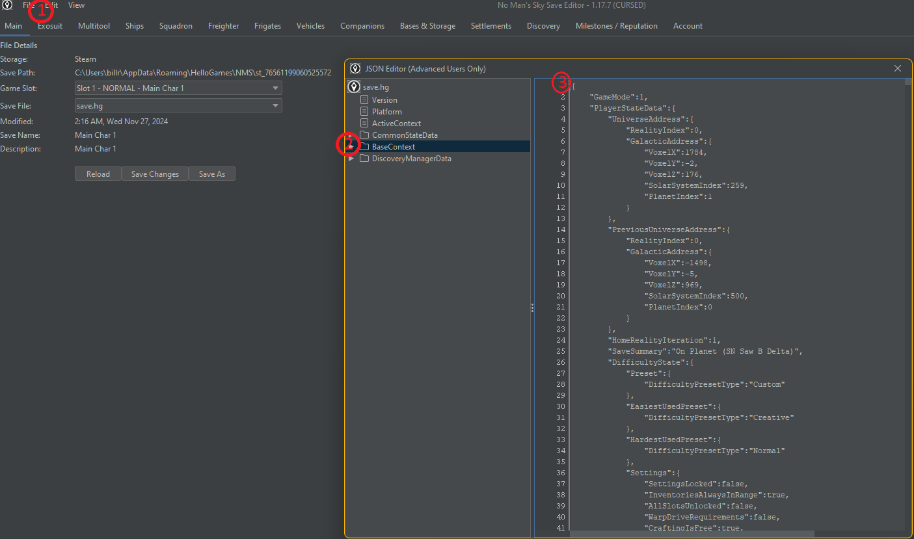

BBB NMS Save File Manipulator - Grabbing the BaseContext Json data from Goatfungus
Back to the Help Index

This is just a quick screenshot showing where you may copy from, and later paste the required data to move it in and out of a save editor. I have not yet asked for permission to use
the supplied screenshot and hope no one gets mad. I will seek permission before I would release it for general use.
The flow here is as follows from initially grabbing the data, through bringing the new data back to be saved back into the live game context:
- Copying the data to be modified:
- Open the JSON editor and select Edit->Edit Raw JSON (see 1)
- Highlight BaseContext on the left (see 2)
- Put the cursor at the top left of the text window (see 3)
- Hit CTRL+SHFT+End to select the full text.
- Hit CTRL+C to COPY. The text is now copied to your clipboard for import into BBB-NMS-SFM
After modification and bringing the new data back over
- Pasting the modified data back into the live game context; It's a repeat of above except for the last step:
- Open the JSON editor and select Edit->Edit Raw JSON (see 1)
- Highlight BaseContext on the left (see 2)
- Put the cursor at the top left of the text window (see 3)
- Hit CTRL+SHFT+End to select the full text.
- Now Hit CTRL-V to PASTE and replace the full text in the window with the data from your system clipboard
- Now in Goatfungus, when you close out the JSON editor window you will get a popup asking to confirm saving. Hit yes
- I always also go up to File and hit save again too
Finally, be aware that the last checkbox settings used during a completed inventory sort will be stored as the default settings for the next use. In other words next time you pull up the
dialog, you will see the same checkboxes checked as the last time you hit the 'Execute Sort' button.
Back to the Help Index